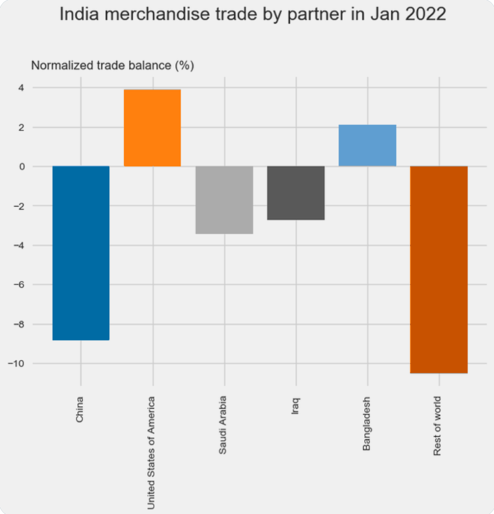
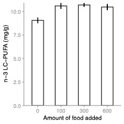

Consider this graph that was produced to show Indian trade balances with prominent partners (link to tweet here)

Identify at least two things that could be changed to make this graph more effective.
Problems:
Colours are a distraction. They convey no information whatsoever.
X-labels at wrong angle – very hard to read
Y-axis title buried in background – needs to stand out
Grid contributes little, especially vertical lines
Would benefit from 90 clockwise rotation
Could consider colour for neg and pos values
Consider adding Negative and Positive headings
Grey background doesn’t help much
This exercise is to think about effective figures for different purposes. Let’s return to Figure 6.5, which shows means (and SEs) for content of salmon with different feeding regimes (see details in Box 6.4):

… Your task is to produce two versions of this figure. Think about information that would be on and around the figure, and the need for titles and captions.
What would you need to do for that figure to appear in a thesis or a manuscript?
How would you design the figure for a conference talk or seminar?
This exercise focuses on a marine ecological experiment reported by Brothers and Blakeslee (2021) looking at the interplay between parasitism and habitat structure in affecting survival of flatback mud crabs, Eurypanopeus depressus, in the Gulf of Mexico.
The parasite was an introduced barnacle, Loxothylacus panopaei, which alters crab behaviour and alter risks of predation. The predators are other crabs, another mud crab, Panopeus herbstii and the stone crab Menippe mercenaria.
The research question of interest was whether the parasite effect depends on habitat complexity.
The question was addressed with a laboratory experiment. The important details for you
Mud crabs were infected or uninfected with the parasite
They lived in simple (gravel) or complex (oyster shell) habitats
Experimental units were large tanks (“mesocosms”), each with 10 crabs
3 replicate tanks for each combination of parasitism and complexity
Number of surviving crabs recorded daily for 5 days
Produce a graph or panel of graphs showing what happened, focusing on the research question. You can use the data file provided (crab example for graphing.csv); the file shows mean and s.e. of the proportion of crabs surviving at a given time. Feel free to use all the data or one particular time, e.g. 24 or 48h.
crab <- read.csv("data/crab example for graphing.csv")
crab## Complexity Parsitism Time Proportion.alive std.error
## 1 Simple Uninfected 0 1.00 0.00
## 2 Simple Uninfected 24 0.50 0.06
## 3 Simple Uninfected 48 0.27 0.13
## 4 Simple Uninfected 72 0.20 0.10
## 5 Simple Uninfected 96 0.07 0.07
## 6 Simple Uninfected 120 0.07 0.07
## 7 Simple Infected 0 1.00 0.00
## 8 Simple Infected 24 0.04 0.04
## 9 Simple Infected 48 0.00 0.00
## 10 Simple Infected 72 0.00 0.00
## 11 Simple Infected 96 0.00 0.00
## 12 Simple Infected 120 0.00 0.00
## 13 Complex Uninfected 0 1.00 0.00
## 14 Complex Uninfected 24 0.44 0.17
## 15 Complex Uninfected 48 0.17 0.03
## 16 Complex Uninfected 72 0.17 0.07
## 17 Complex Uninfected 96 0.08 0.04
## 18 Complex Uninfected 120 0.04 0.03
## 19 Complex Infected 0 1.00 0.00
## 20 Complex Infected 24 0.38 0.08
## 21 Complex Infected 48 0.21 0.05
## 22 Complex Infected 72 0.07 0.06
## 23 Complex Infected 96 0.04 0.03
## 24 Complex Infected 120 0.03 0.03• Hand drawn or using software – you’ll need a single page to share with the class
If the research question was on the value of habitat complexity and whether the parasite changes this value, how would you draw the graph differently?
Students work in small groups and share plots. Group discussion follows from first shared plot, and may involve other plots show, or just discussion around the first one.
Hand-drawn works fine. If the class is uniformly strong on R (or excel graphing), they can be shared electronically, but students can get distracted tinkering with software
The whole time series can be used, but it’s not very effective, as most crabs were killed by D5 and most change happened D1 and D2.
Plenty of pics of the crab species available through Wikimedia Commons
Extension question: If the research question was on the value of habitat complexity and whether the parasite changes this value, how would you draw the graph differently?
Brothers, C. A. & Blakeslee, A. M. H. (2021). Alien vs predator play hide and seek: How habitat complexity alters parasite mediated host survival. Journal of Experimental Marine Biology and Ecology, 535. doi:10.1016/j.jembe.2020.151488